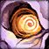
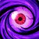
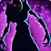
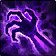

Problem
Shadow has strong fantasy, but its damage structure can feel uneven in Mythic+: slow setup, long waits between major moments, and volatile multi-target scaling.
This page defines the system rules behind Shadow’s moment-to-moment loop: DoT setup, priority lists, Voidform cadence, Dark Ascension timing, Hero talent integration, Apex payoff behavior, tuning levers, validation risks, and how spread pressure funnels into priority damage.
Shadow has strong fantasy, but its damage structure can feel uneven in Mythic+: slow setup, long waits between major moments, and volatile multi-target scaling.
Create a faster, clearer combat loop where Shadow can apply pressure quickly, choose a priority target, and convert stored pressure into tunable payoff.
Preserve Shadowform as the default stance, use Voidform as the frequent rotational power window, use Dark Ascension as the major escalation tool, and use Resonance as the tunable replacement for passive damage duplication.
Shadow builds pressure across the pack, funnels damage into the target that matters, and times Void Lash, Mind Blast, Shadow Word: Madness, Voidform, and Ascended Voidform around prepared enemies.

Vampiric Touch applies Shadow Word: Pain by default. This removes unnecessary double-application friction in multi-target content while keeping DoT uptime central to the spec.
DoTs can be safely refreshed near the end of their duration without losing remaining time. The player-facing rule is simple: refresh when the DoT is nearly expired.
“Apply DoTs to all targets” should not mean slowly tabbing through every enemy and pressing two buttons per target. In small pulls, the player can manually DoT important enemies. In larger pulls, Mind Sear accelerates setup so Shadow reaches meaningful decisions faster.
Vampiric Touch  Stored Pressure
Resonance stacks on enemies as controlled payoff potential.
Stored Pressure
Resonance stacks on enemies as controlled payoff potential.

Priority Target Mind Blast, Shadow Word: Madness, and Void Lash shape priority pressure. Shadowform
Default stance and visual identity.
Shadowform
Default stance and visual identity.
 Voidform
Recurring rotational power window.
Voidform
Recurring rotational power window.
 Dark Ascension
Empowers Voidform into Ascended Voidform.
Dark Ascension
Empowers Voidform into Ascended Voidform.
Resonance is not passive damage duplication. It is a stack-based enemy debuff that rewards DoT uptime, target preparation, priority spending, and timing payoff spells into the right enemies.
Shadow Word: Pain and Vampiric Touch ticks generate Resonance on affected enemies. Resonance stacks up to 5 times per enemy and lasts 12 sec. Adding a new stack refreshes its duration.

Shadow Word: Madness applies 1 Resonance stack to its target when cast. This effect can occur once every 6 sec per target. During Voidform or Ascended Voidform, Shadow Word: Madness also refreshes Resonance duration on its target.
Mind Blast consumes all Resonance from your current target. Void Lash consumes all Resonance from enemies it strikes. Each consumed stack deals flat Shadow damage based on Spell Power.
Each enemy tracks its own Resonance stacks. A target at 5 stacks is “ready” for payoff. Consuming Resonance removes all stacks from that enemy, so the player must rebuild pressure before the next payoff.
Each consumed stack deals flat Shadow damage, such as 18% of Spell Power per stack. Flat damage avoids percent-health tuning problems across bosses, elites, and small mobs.
Shadow Word: Madness supports priority-target Resonance without becoming the main Resonance engine. Only the cast applies a stack. Its damage-over-time component does not generate extra Resonance.
These changes remove passive scaling problems and refocus the kit around deliberate setup, controlled payoff, and clear cooldown cadence.
| Spell / System | Treatment | Design Reason |
|---|---|---|
| Shadowform | Preserved as default stance | Keeps Shadow’s iconic visual identity intact instead of turning it into a temporary cooldown. |
| Voidform | Reframed as the small rotational cooldown | Creates frequent power moments that fit Mythic+ pacing without requiring a long cooldown cycle. |
| Dark Ascension | Reintroduced as the major cooldown concept | Functions as the large escalation button, empowering Voidform into Ascended Voidform for planned burst windows. |
| Shadow Word: Madness | Retained as the primary Insanity spender | Replaces Devouring Plague references and supports priority-target Resonance without becoming the main Resonance engine. |
| Devouring Plague | Removed from redesign language | Midnight moved this spender identity into Shadow Word: Madness, so the design should use current naming. |
| Mind Sear | Reworked as AoE setup | Mind Sear returns as a familiar name and icon, but not as old channeled filler. It becomes a deliberate cast that applies DoTs to a capped number of targets. |
| Shadowy Apparitions | Retained as baseline passive | Shadowy Apparitions remain part of the spec’s baseline identity. Apex talents can upgrade or transform some of them into Void Apparitions. |
| Void Apparitions | Apex enhancement | Void Apparitions become an enhanced apparition outcome tied to capstone idol triggers, rather than replacing Shadowy Apparitions outright. |
| Tentacle Slam | Reworked into Void Lash | Keeps the tentacle fantasy but removes awkward positional targeting and “furthest target” gameplay. |
| Shadowfiend / Voidwraith | Retained through talents, not as a rotational button | Depth of Shadows and Voidwraith remain passive or proc-driven damage layers without adding button bloat. |
| Fade / Dispersion / Flash Heal | Mostly unchanged | Defensive tools remain solid. Protective Light keeps Flash Heal relevant as a self-defensive button. |
| Void Shift, Psychic Horror, Shadow Crash, Void Bolt | Removed | The redesign does not restore removed Midnight abilities that do not support the new loop. |
Maintain Vampiric Touch
Refresh when close to expiring. Shadow Word: Pain is maintained through Vampiric Touch baseline.
Use Voidform on cooldown
Use frequently as the baseline rotational power window unless a known add wave or damage window is imminent.
Use Dark Ascension for planned damage
Use before a boss damage amp, add wave, or high-value burn window. It empowers your next two Voidforms into Ascended Voidform.
Build Resonance before consuming it
Maintain DoTs long enough to build Resonance stacks. Shadow Word: Madness can add 1 stack on cast to help the priority target reach payoff faster.
Void Lash benefits from the active window and consumes Resonance from enemies it strikes. During Ascended Voidform, it strikes one additional afflicted target.
Primary generator and single-target Resonance spender. Consumes all Resonance from your current target when stacks are present.
Use before capping. Shadow Word: Madness applies 1 Resonance to its target when cast, limited to once every 6 sec per target.
 Use Shadow Word: Death in execute
Use Shadow Word: Death in execute
Use below 20% health or when a short-lived add needs to die immediately. With Depth of Shadows, execute casts can trigger additional Shadowfiends.
 Mind Flay as filler
Mind Flay as filler
Channel when nothing higher priority is available.
Quickly applies Vampiric Touch and Shadow Word: Pain so Shadow can start building Resonance.
Manually DoT high-priority enemies if needed
If Mind Sear misses a dangerous caster or distant add, manually apply Vampiric Touch.
Pick the priority enemy and funnel damage through Void Focus instead of constantly tabbing for padding.
Use Voidform for meaningful pulls
Voidform is designed around a roughly 30-second cadence that aligns with typical pull pacing.
Use Dark Ascension on large or dangerous pulls
The “big pull” lever. It empowers the next two Voidforms into Ascended Voidform without making the spec inactive outside cooldowns.
Build Resonance before consuming it
Build stacks on relevant enemies before consuming them with Mind Blast or Void Lash. Shadow Word: Madness helps the priority target build stacks faster without affecting the whole pack.
Spend Insanity on the priority target. On cast, Shadow Word: Madness adds 1 Resonance stack to that target, limited to once every 6 sec per target.
Converts setup into payoff by consuming Resonance from enemies it strikes and triggering one of the idol capstone effects.
Use Shadow Word: Death to secure kills
Best on priority mobs, dangerous casts, or enemies entering execute range.
Mind Flay as filler on the priority target
Simple filler rule: channel into the enemy that needs to die.
Shadowform remains the always-on identity layer. Voidform becomes the frequent rotational power window that creates regular moments of acceleration. Dark Ascension is the larger cooldown that empowers Voidform into Ascended Voidform for major pulls or planned burst windows.
Shadowform
→
Voidform
→
Dark Ascension
→
Ascended Voidform
These values are placeholders, but they define the intended pacing: Voidform is the regular rotational window, Dark Ascension is the major planned window, and Void Lash is the flexible payoff tool that bridges single-target and cleave.
| Spell | Proposed Cooldown | Role |
|---|---|---|
| Voidform | 30 sec cooldown | Frequent rotational power window. Creates regular cadence without making Shadow wait for a 2-minute burst cycle. |
| Dark Ascension | 2 min cooldown | Major escalation cooldown. Causes the next two Voidforms to become Ascended Voidform. |
| Void Lash | 2 charges, 20 sec recharge | Replaces Tentacle Slam as the target-anchored payoff button and idol-capstone trigger. |
| Mind Sear | 2 charges, 18 sec recharge | Single-cast AoE setup spell. Applies Vampiric Touch and Shadow Word: Pain to the target and up to 4 nearby enemies. The second charge is baseline so large pulls do not feel starved for setup. |
| Mind Blast | 1 charge baseline | Primary generator and single-target Resonance spender. A talent can add a second charge for priority-damage leaning builds. |
Shadow should remain functional in both single-target and multi-target by default. Talent choice nodes can bias the player toward faster setup, stronger priority payoff, or wider cleave without making the other mode feel incomplete.
This node changes what Mind Sear is best at. The baseline spell already has 2 charges, so neither option is required for basic AoE usability.
Mind Sear applies 2 additional Resonance stacks to your primary target. If the target is already at maximum Resonance, Mind Sear increases your next Mind Blast damage by 20%.
Mind Sear affects up to 2 additional nearby enemies. Casting the second charge within 8 sec applies 1 additional Resonance stack to all affected enemies.
This node changes how Shadow spends its prepared pressure. One path favors priority-target control through Mind Blast. The other favors controlled cleave through Void Lash.
Mind Blast gains a second charge and deals increased Resonance payoff damage to your current target. This supports boss damage, priority targets, and dangerous enemies in Mythic+.
Void Lash strikes 1 to 2 additional afflicted enemies and consumes Resonance from those targets. This supports larger pulls without recreating passive Psychic Link-style duplication.
This keeps Shadow’s familiar passive visual layer intact while still giving Apex talents a stronger Void payoff. Void Apparitions are not a full replacement for Shadowy Apparitions.

Shadowy Apparitions remain part of the base kit. They preserve familiar Shadow Priest visual feedback and continue to represent passive pressure from DoT gameplay.
When a capstone idol effect is triggered, a Shadowy Apparition is spawned. Shadowy Apparitions have a chance to spawn as Void Apparitions, dealing additional damage.
Void Lash replaces Tentacle Slam as the reliable idol trigger. Void Lash has a 100% chance to activate one of the four capstone idols, preserving the Apex interaction without keeping Tentacle Slam.
Archon and Voidweaver should remain distinct, but neither should force Shadow away from its redesigned core loop.

Archon emphasizes Halo as a cadence amplifier. Halo should increase Resonance output, support Apparition generation, or slightly extend Voidform windows.

Voidweaver should lean into Entropic Rift, Collapsing Void, and deeper Void pressure while preserving Resonance and Void Focus. It no longer needs Halo as a shared package.
When one of the capstone idol effects is triggered, a Shadowy Apparition is spawned. This preserves Shadow’s familiar passive identity.
Shadowy Apparitions have a chance to spawn as Void Apparitions, dealing additional damage and visually signaling an empowered capstone interaction.
Void Lash replaces Tentacle Slam as the deterministic trigger for idol-capstone effects. It has a 100% chance to activate one of the four capstone idols.
5 Resonance Stacks
Voidform
Dark Ascension
5 Resonance Stacks
Ascended Voidform #1
Ascended Voidform #2
5 Resonance Stacks
→
Voidform
→
Consume Resonance
| Time | Action | Reason |
|---|---|---|
| 0s | Mind Sear | Applies DoTs quickly and starts Resonance generation. |
| 2s | Target priority enemy | Sets up Void Focus funneling instead of tab-target damage padding. |
| 3s | Mind Blast | Generates Insanity and can consume Resonance from the current target if stacks are already present. |
| 4s | Shadow Word: Madness | Spends Insanity on the priority target and applies 1 Resonance stack, limited to once every 6 sec per target. |
| 5s | Voidform | Starts the baseline rotational power window once setup exists. |
| 6s | Void Lash | Hits the priority target, cleaves DoTed enemies, consumes Resonance, triggers an idol capstone, and removes consumed stacks. |
| 8s+ | Shadow Word: Madness / Mind Blast / SW:D | Continue pressure, spend Insanity, rebuild Resonance, and finish the priority target. |
Mind Sear → focus target → Shadow Word: Madness → Voidform → consume Resonance with Void Lash or Mind Blast. The spec works without perfect optimization.
Builds Resonance before Voidform, uses Shadow Word: Madness to accelerate priority-target stacks, maintains DoTs on valuable targets, times Void Lash, plans Dark Ascension, chooses the correct funnel target, and decides whether to talent toward Mind Blast priority damage or Void Lash cleave.
These are the encounter profiles I would use to evaluate whether the redesign succeeds mechanically before final tuning.
Validate that Shadow remains functional when Resonance has fewer targets to build from. Single-target should feel stable without requiring excessive compensation.
Confirm that Mind Sear, Shadow Word: Madness, Resonance, and Void Lash create a clear funnel pattern into the priority target.
Check whether Resonance payoff feels satisfying without recreating Psychic Link-style scaling spikes.
Test sustained multi-target uptime to ensure Resonance caps, target limits, and reduced damage beyond 5 targets prevent runaway scaling.
Validate that Mind Sear and Shadow Word: Madness provide enough immediate value when enemies die before full DoT and Resonance conversion.
Test Dark Ascension timing to ensure Ascended Voidform feels powerful without making normal Voidform windows feel irrelevant.
| Risk | Why It Matters | Mitigation |
|---|---|---|
| Resonance underperforms in single-target | With only one DoTed target, Resonance builds from a single source of ticks rather than several. Stack generation is slower, payoff windows feel weaker, and the spec can feel underpowered on pure single-target bosses even if the numbers are technically competitive. | Resonance generates at an accelerated rate: approximately 1.5x when the player has only one DoTed enemy in range. This compensates for reduced tick count without requiring a separate single-target system. Shadow Word: Madness's per-target cooldown is also reduced from 6 sec to 4 sec when no other DoTed enemies are nearby, letting it fill the Resonance gap more actively without breaking multi-target balance. Neither change requires a new ability. Both are conditional modifiers on existing rules. |
| Resonance overperforms on council fights | High uptime on multiple targets could recreate the same scaling problem this redesign is trying to avoid. | Use a 5-stack cap, reduced damage beyond 5 targets, and optional diminishing returns. |
| Shadow Word: Madness becomes too central | If it builds too much Resonance, it becomes both the best spender and the best setup tool. | Shadow Word: Madness only applies 1 Resonance on cast, with a 6 sec per-target limiter. Its follow-up damage does not generate extra stacks. |
| Ascended Voidform overshadows Voidform | If the empowered state is too strong, normal Voidform windows feel like filler instead of the core loop. | Ascended Voidform should extend and enhance the cycle, not replace it. Its bonus should be meaningful but bounded. |
| Void Lash becomes mandatory in every talent build | Because Void Lash triggers idol capstones and consumes Resonance, it could crowd out Mind Blast and single-target decisions. | Keep Void Lash as the cleave-leaning payoff, while Mind Blast remains the priority-target Resonance spender. Talents can lean one direction without disabling the other. |
| Void Apparitions replace too much classic identity | Fully replacing Shadowy Apparitions would remove a recognizable Shadow Priest visual and combat texture. | Keep Shadowy Apparitions baseline. Void Apparitions are an enhanced Apex outcome, not a full replacement. |
| Mind Sear solves too much setup | If it applies too broadly, Shadow loses target selection and DoT upkeep as skill expression. | Keep baseline Mind Sear capped at the target plus 4 nearby enemies. Expansive Sear can increase coverage as a talent choice. Manual DoT application still matters for distant or dangerous targets. |
| Cooldown naming confusion | Voidform, Dark Ascension, and Ascended Voidform must feel visually and mechanically distinct. | Keep Shadowform as the always-on stance, reserve Voidform for the recurring window, and reserve Ascended Voidform for the major empowered state. |
| Hero talents become required fixes | Archon or Voidweaver should not be needed to make the base spec feel complete. | Keep the base loop functional first. Hero talents should modify emphasis, not solve missing fundamentals. |
This redesign uses sample values to communicate system intent. Final tuning would depend on encounter testing, target count scaling, dungeon pacing, raid boss profiles, Voidform frequency, and Dark Ascension’s Ascended Voidform value budget.
Resonance should stack up to 5 times per enemy and be consumed all at once by payoff spells. Additional tuning can use target caps or diminishing returns to prevent council fights from recreating Psychic Link-style scaling problems.
Shadow Word: Madness applies 1 Resonance on cast only. A 6 sec per-target limiter lets it support priority funneling without overfeeding Resonance during high-Insanity windows.
Ascended Voidform should feel stronger than normal Voidform, but not so strong that players feel punished for using normal Voidform windows between Dark Ascension cycles.
Two charges let Void Lash bridge pull timing and capstone-idol activation without requiring the player to press it on cooldown every time. The 20 sec recharge prevents excessive burst stacking.
The baseline 5-target application cap keeps setup fast without making every pull instantly fully solved. Expansive Sear can widen coverage for large-pull builds without making that coverage baseline.
Archon, Voidweaver, Shadowy Apparitions, and Void Apparitions can shift emphasis, but base Shadow should not rely on any one hero or Apex interaction to feel functional.
UI design is not an afterthought. It is part of class design. A system that requires a third-party addon to be readable is a system that has partially failed at the design level. Shadow's redesign depends on three readable states: Resonance stacks on enemies, the current form window, and the Dark Ascension empowerment. All three need to work in the default UI before the spec ships.
Resonance stacks on enemies need to be readable on enemy nameplates in the default UI. Not buried in a debuff list or invisible without the need of addons. Stack count should display clearly so the player can tell at a glance which targets are prepared for payoff and which are still building.
Enemies at 5 stacks should have a distinct visual state, a color shift or glow on the nameplate, so the priority decision is immediate rather than requiring the player to mouse over every target. The current default nameplate system can support this with priority debuff display. It needs to be configured to do so.
Voidform uses its current in-game animation. The visual language already exists and works. No redesign needed. The spec's visual identity during the rotational window is intact.
Ascended Voidform should use Dark Ascension's wing animation, repurposed as the empowered state visual. The wings carry immediate visual weight and are already associated in players' minds with a major power moment. Reusing that animation as the Ascended Voidform state creates clear, memorable differentiation between the normal window and the empowered one without requiring new art budget.
When Dark Ascension is active and the player's next Voidform will be Ascended, the player needs to know that before pressing the button. A buff indicator showing "Next Voidform: Ascended" with a remaining charge count (2 → 1 → 0) gives the player the planning information they need without requiring them to track it mentally.
This is a simple aura display. It belongs in the default UI, not delegated to addons. Planned burst windows only feel meaningful if the player has reliable, visible confirmation of what they are planning around.
Shadowform
Voidform
Ascended Voidform
Dark Ascension
Resonance
Depth of Shadows 
Voidwraith